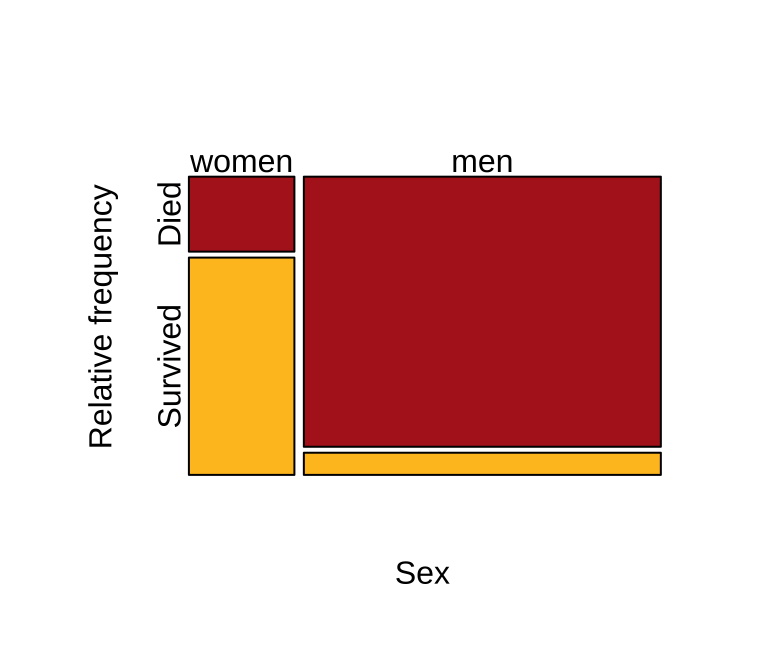

3/4." width="384">## NULLContingency Analyses
2025-11-26
Quantifying associations between two categorical variables
Relative risk
Odds-ratio
Testing associations between categorical variables
\(\chi^2\) contingency test
G-test
Fisher’s test
Chi-square contingency (independence) tests (2x2)
Relative risk is the probability of an undesired outcome in the treatment group divided by the probability of that outcome in the control group.
Parameter: \(\ RR=\frac{p_1}{p_2}\)
Estimate: \(\hat {RR}=\frac{\hat{p_1}}{\hat{p_2}}\)
, where
\(\hat{p_i}=\frac{n_{\text{bad outcomes in group i}}}{n_{\text{individuals in group i}}}\)
\(\hat {RR} < 0\): Relative risk is lower in group 1
\(\hat {RR} > 0\): Relative risk is higher in group 1
Reduction in relative risk is also of interest: \(1- \hat {RR}\)
Wikipedia Commons

3/4." width="384">## NULL## NULLWomen’s relative risk of dying in the titanic compared to men:
\[\hat {RR}=\frac{\hat{p}_{women}}{\hat{p}_{men}}\] , where
\(\hat{p_{w}}=\frac{death}{\text{all women}}\)
\(\hat{p_{m}}=\frac{death}{\text{all men}}\)
## NULL\(\hat p_{w}=\frac{109}{(109+316)}\approx0.256\)
\(\hat p_{men}=\frac{1329}{(1329+109)}\approx0.924\)
Women’s RR of dying compared to men:
\(\hat {RR}=\frac{0.256}{0.924}=0.277\) (women’s RR of dying was less than 1/3that of men)
Women’s reduction in relative risk of dying compared to men:
\(1-\hat {RR}=0.723\)
Good:
Bad:
Parameter: \(O=\frac{p}{1-p}\)
Estimate: \(\hat {O}=\frac{\hat p}{1-\hat p}\)
\(\hat{O}>1\) : Success more likely than failure
\(\hat{O}<1\) : Success less likely than failure
\(\hat{O}>1\) : Success and failure equally likely
Contingency table: Cells contain counts
| Treatment | Control | |
|---|---|---|
| Success | a | b |
| Failure | c | d |
Success: the focal outcome
Treatment/Control: The two categories identify the two groups whose probability of success is being compared.
Contingency table: Cells contain counts
| Treatment | Control | |
|---|---|---|
| Success | a | b |
| Failure | c | d |
\(O_{1}=\frac{P(Success|Group_1)}{1-P(Success|Group_1)}\)
\(O_{2}=\frac{P(Success|Group_2)}{1-P(Success|Group_2)}\)
\(OR=\frac{O_{1}}{O_{2}}\)
Contingency table: Cells contain counts
| Treatment | Control | |
|---|---|---|
| Success | a | b |
| Failure | c | d |
\(OR=\frac{O_{1}}{O_{2}}\)
\(\hat{OR}=\frac{\hat{O_{1}}}{\hat{O_{2}}}\) \(\hat{OR}=\frac{a/c}{b/d}=\frac{ad}{bc}\)
| Women | Men | |
|---|---|---|
| Death | 109 | 1329 |
| Survival | 316 | 109 |
| Women | Men | |
|---|---|---|
| Death | 109 | 1329 |
| Survival | 316 | 109 |
\(\hat{OR}=\frac{\hat{O}_{women}}{\hat{O}_{men}}\).
\(\hat {O}_{women}=\frac{\hat p}{1-\hat p}=\frac{0.256}{1-0.256}\approx 0.344\). We have \(\hat{p_{w}}\) from before
\(\hat {O}_{men}=\frac{\hat p}{1-\hat p}=\frac{0.924}{1-0.924}\approx 12.2\). We have \(\hat{p_{w}}\) from before
\[\hat{OR}=\frac{\hat{O}_{women}}{\hat{O}_{men}}=\frac{0.344}{12.2}\approx 0.0282\]
| Women | Men | |
|---|---|---|
| Death | 109 | 1329 |
| Survival | 316 | 109 |
Alternatively, even without \(\hat{p_{w}}\) and \(\hat{p_{m}}\), we can use this table:
$===0.0766782
Good:
Bad:
B215: Biostatistics with R